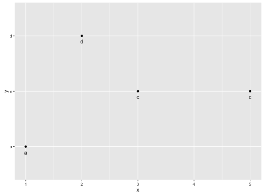

position_nudge(x = 0, y = 0)
This is useful if you want to nudge labels a little ways from their points.
df <- data.frame( x = c(1,3,2,5), y = c("a","c","d","c") ) ggplot(df, aes(x, y)) + geom_point() + geom_text(aes(label = y))ggplot(df, aes(x, y)) + geom_point() + geom_text(aes(label = y), position = position_nudge(y = -0.1))
position_dodge;
position_fill,
position_stack;
position_identity;
position_jitterdodge;
position_jitter